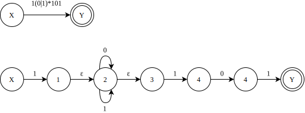
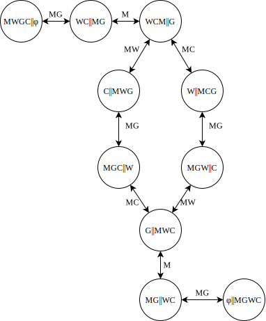

作业 02 - 第三章作业
- P64: 7, 8, 12, 14 (22/3/22) 作业下一次课讲完后，才能做
- P64: 7, 8, 10 (22/3/29)
- P64: 12, 14 (22/4/12)
7. 构造下列正规式相应的 DFA
1(0|1)*101
1(1010*|1(010)*1)*0
0*10*10*10*
(00|11)*((01|10)(00|11)*(01|10)(00|11)*)*
解:
(1)

确定化:
| I | I0 | I1 | K | 0 | 1 |
|---|---|---|---|---|---|
| {X} | φ | {1, 2, 3} | 0 | 1 | 2 |
| φ | φ | φ | 1 | 1 | 1 |
| {1,2,3} | {2,3} | {2,3,4} | 2 | 3 | 4 |
| {2,3} | {2,3} | {2,3,4} | 3 | 3 | 4 |
| {2,3,4} | {2,3,5} | {2,3,4} | 4 | 5 | 4 |
| {2,3,5} | {2,3} | {2,3,4,Y} | 5 | 3 | 6 |
| {2,3,4,Y} | {2,3,5} | {2,3,4} | 6 | 5 | 4 |

由状态子集转换矩阵可知, 状态 2 和 3 是等价的, 而状态 4 和 6 是等价的. 因此,合并等价状态之后只剩下 5 个状态, 也即是最少状态的 DFA.
(2) 构造正规表达式的 NFA

8. 给出下面正规表达式:
(1) 以 01 结尾的二进制数串;
(2) 能被5整除的十进制整数;
(3) 包含奇数个 1 或奇数个 0 的二进制数串;
(4) 英文字母组成的所有符号串, 要求符号串中的字母依照字典序排列;
(5) 没有重复出现的数字的数字符号串的全体;
(6) 最多有一个重复出现的数字的数字符号串的全体;
(7) 不包含子串 abb 的由 a 和 b 组成的符号串的全体.
解:
(1) (0|1)*01
(2) (1|2|3|4|5|6|7|8|9)(0|1|2|3|4|5|6|7|8|9)*(0|5)|(0|5)
(3) 由奇数个 1 的二进制数串可表示为 1(11)*, 向其中填入 0 可得 0*1(0*|10*1)*;
同理可得, 奇数 0 的二进制数串可表示为 1*0(1*|01*0)*.
综上, 包含奇数个 1 或奇数个 0 的二进制数串的正规表达式为 0*1(0*|10*1)*|1*0(1*|01*0)*.
(4) a*b*c* ... x*y*z*
10. 一个人带着狼, 山羊和白菜在一条河的左岸. 有一条船, 大小正好能装下这个人和其它三件东西中的一件. 人和他的随行物都要过到河的右岸. 人每次只能将一件东西摆渡过河. 但若人将狼和羊留在同一岸而无人照顾的话, 狼将把羊吃掉. 类似地, 若羊和白菜留下来无人照看, 羊将会吃掉白菜. 请问是否有可能渡过河去, 使得羊和白菜都不被吃掉? 如果可能, 请用有限自动机写出渡河的方法.
解:
令人=M, 狼=W, 山羊=G, 白菜=C. 字符集为每次渡河的成员, 故 Σ={M, MW, MG, MC}.
状态集为河边和对岸的情况, 用双竖线表示河. 因此, 开始状态为: MWGC || φ, 接受状态为: φ || MWGC.
DFA图如下:

12. 将图 3.18 的 (a) 和 (b) 分别确定化和最少化.
| (a) | (b) |
图 3.18 有限自动机 (a) 零确定化的有限自动机; (b) 需最小化的有限自动机
14. 构造一个 DFA, 它接受 \(\Sigma = \{0, 1\}\) 上所有满足如下条件的字符串: 每个 1 都有 0 直接跟在右边.